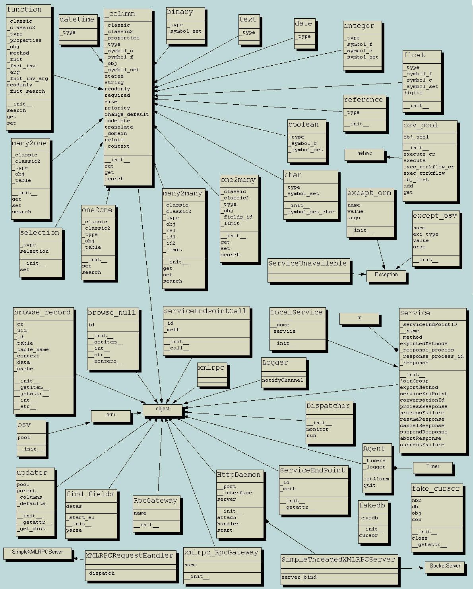
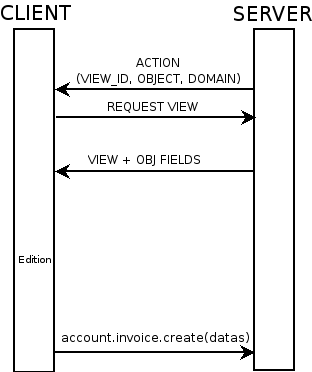

Module development
Introduction
OpenERP uses a three-tier architecture. The application tier itself is written as a core and multiple additional modules that can be installed or not to create a particular configuration of OpenERP.
The core of OpenERP and its different modules are written in Python. The functionality of a module is exposed through XML-RPC (and/or NET-RPC depending on the server's configuration). Modules also typically make use of OpenERP ORM to persist their data in a relational database (PostgreSQL). Modules can insert data in the database during installation by providing XML (or CSV or YML) files.
Although modules are a simple way to structure a complex application, OpenERP modules also extend the system. Modules are also called addons (they could also have been called plugins).
In a typical configuration of OpenERP, the following modules can be found:
- base: the most basic module; it is always installed and can be thought as being part of the core of OpenERP. It defines
ir.property,res.company,res.request,res.currency,res.users,res.partner, and so on. - crm: Customer & Supplier Relationship management.
- sale: Sales management.
- mrp: Manufacturing Resource Planning.
By using Python, XML files, and relying on OpenERP's ORM and its extensibility mechanisms, new modules can be written easily and quickly. OpenERP's open source nature and its numerous modules also provide a lot of examples for any new development.
Module Structure
The Modules
- Introduction
-
Files & Directories:
- __openerp__.py
- __init__.py
- XML Files:
- Actions
- Menu Entries
- Reports
- Wizards
-
Profiles
Modules - Files and Directories
All the modules are located in the server/addons directory.
The following steps are necessary to create a new module:
- create a subdirectory in the server/addons directory
- create a module description file: __openerp__.py
- create the Python file containing the objects
- create .xml files that download the data (views, menu entries, demo data, ...)
- optionally create reports, wizards or workflows.
The Modules - Files And Directories - XML Files
XML files located in the module directory are used to modify the structure of the database. They are used for many purposes, among which we can cite :
- initialization and demonstration data declaration,
- views declaration,
- reports declaration,
- wizards declaration,
- workflows declaration.
General structure of OpenERP XML files is more detailed in the xml-serialization section. Look here if you are interested in learning more about initialization and demonstration data declaration XML files. The following section are only related to XML specific to actions, menu entries, reports, wizards and workflows declaration.
Python Module Descriptor File __init__.py
The __init__.py file
The __init__.py file is, like any Python module, executed at the start of the program. It needs to import the Python files that need to be loaded.
So, if you create a "module.py" file, containing the description of your objects, you have to write one line in __init__.py:
import module
OpenERP Module Descriptor File __openerp__.py
In the created module directory, you must add a __openerp__.py file. This file, which must be in Python format, is responsible to
- determine the XML files that will be parsed during the initialization of the server, and also to
- determine the dependencies of the created module.
This file must contain a Python dictionary with the following values:
name
The (Plain English) name of the module.
version
The version of the module, on 2 digits (1.2 or 2.0).
description
The module description (text) including documentation on how to use your modules.
author
The author of the module.
website
The website of the module.
license
The license of the module (default:GPL-2).
depends
List of modules on which this module depends. The base module must almost always be in the dependencies because some necessary data for the views, reports, ... are in the base module.
init
List of .xml files to load when the server is launched with the "--init=module" argument. Filepaths must be relative to the directory where the module is. OpenERP XML File Format is detailed in this section.
data
List of .xml files to load when the server is launched with the "--update=module" launched. Filepaths must be relative to the directory where the module is. OpenERP XML File Format is detailed in this section.
demo
List of .xml files to provide demo data. Filepaths must be relative to the directory where the module is. OpenERP XML File Format is detailed in this section.
installable
True or False. Determines if the module is installable or not.
images
List of .png files to provide screenshots, used on http://apps.openerp.com.
active
True or False (default: False). Determines the modules that are installed on the database creation.
test
List of .yml files to provide YAML tests.
Example
Here is an example of __openerp__.py file for the product module
{
"name" : "Products & Pricelists",
"version" : "1.1",
"author" : "Open",
"category" : "Generic Modules/Inventory Control",
"depends" : ["base", "account"],
"init_xml" : [],
"demo_xml" : ["product_demo.xml"],
"update_xml" : ["product_data.xml", "product_report.xml", "product_wizard.xml",
"product_view.xml", "pricelist_view.xml"],
"installable": True,
"active": True
}
The files that must be placed in init_xml are the ones that relate to the workflow definition, data to load at the installation of the software and the data for the demonstrations.
The files in update_xml concern: views, reports and wizards.
Objects
All OpenERP resources are objects: menus, actions, reports, invoices, partners, ... OpenERP is based on an object relational mapping of a database to control the information. Object names are hierarchical, as in the following examples:
- account.transfer : a money transfer
- account.invoice : an invoice
- account.invoice.line : an invoice line
Generally, the first word is the name of the module: account, stock, sale.
Other advantages of an ORM;
- simpler relations : invoice.partner.address[0].city
- objects have properties and methods: invoice.pay(3400 EUR),
- inheritance, high level constraints, ...
It is easier to manipulate one object (example, a partner) than several tables (partner address, categories, events, ...)

PostgreSQL
The ORM of OpenERP is constructed over PostgreSQL. It is thus possible to query the object used by OpenERP using the object interface or by directly using SQL statements.
But it is dangerous to write or read directly in the PostgreSQL database, as you will shortcut important steps like constraints checking or workflow modification.
Pre-Installed Data
Data can be inserted or updated into the PostgreSQL tables corresponding to the OpenERP objects using XML files. The general structure of an OpenERP XML file is as follows:
<?xml version="1.0"?>
<openerp>
<data>
<record model="model.name_1" id="id_name_1">
<field name="field1">
"field1 content"
</field>
<field name="field2">
"field2 content"
</field>
(...)
</record>
<record model="model.name_2" id="id_name_2">
(...)
</record>
(...)
</data>
</openerp>
Fields content are strings that must be encoded as UTF-8 in XML files.
Let's review an example taken from the OpenERP source (base_demo.xml in the base module):
<record model="res.company" id="main_company">
<field name="name">Tiny sprl</field>
<field name="partner_id" ref="main_partner"/>
<field name="currency_id" ref="EUR"/>
</record>
<record model="res.users" id="user_admin">
<field name="login">admin</field>
<field name="password">admin</field>
<field name="name">Administrator</field>
<field name="signature">Administrator</field>
<field name="action_id" ref="action_menu_admin"/>
<field name="menu_id" ref="action_menu_admin"/>
<field name="address_id" ref="main_address"/>
<field name="groups_id" eval="[(6,0,[group_admin])]"/>
<field name="company_id" ref="main_company"/>
</record>
This last record defines the admin user :
- The fields login, password, etc are straightforward.
- The ref attribute allows to fill relations between the records :
<field name="company_id" ref="main_company"/>
The field company_id is a many-to-one relation from the user object to the company object, and main_company is the id of to associate.
- The eval attribute allows to put some python code in the xml: here the groups_id field is a many2many. For such a field, "[(6,0,[group_admin])]" means : Remove all the groups associated with the current user and use the list [group_admin] as the new associated groups (and group_admin is the id of another record).
- The search attribute allows to find the record to associate when you do not know its xml id. You can thus specify a search criteria to find the wanted record. The criteria is a list of tuples of the same form than for the predefined search method. If there are several results, an arbitrary one will be chosen (the first one):
<field name="partner_id" search="[]" model="res.partner"/>
This is a classical example of the use of search in demo data: here we do not really care about which partner we want to use for the test, so we give an empty list. Notice the model attribute is currently mandatory.
Record Tag
Description
The addition of new data is made with the record tag. This one takes a mandatory attribute : model. Model is the object name where the insertion has to be done. The tag record can also take an optional attribute: id. If this attribute is given, a variable of this name can be used later on, in the same file, to make reference to the newly created resource ID.
A record tag may contain field tags. They indicate the record's fields value. If a field is not specified the default value will be used.
Example
<record model="ir.actions.report.xml" id="l0">
<field name="model">account.invoice</field>
<field name="name">Invoices List</field>
<field name="report_name">account.invoice.list</field>
<field name="report_xsl">account/report/invoice.xsl</field>
<field name="report_xml">account/report/invoice.xml</field>
</record>
Field tag
The attributes for the field tag are the following:
name : mandatory : the field name
eval : optional : python expression that indicating the value to add
ref : reference to an id defined in this file
model : model to be looked up in the search
search : a query
Function tag
A function tag can contain other function tags.
model : mandatory : The model to be used
name : mandatory : the function given name
eval : should evaluate to the list of parameters of the method to be called, excluding cr and uid
Example
<function model="ir.ui.menu" name="search" eval="[[('name','=','Operations')]]"/>
Getitem tag
Takes a subset of the evaluation of the last child node of the tag.
type : mandatory : int or list
index : mandatory : int or string (a key of a dictionary)
Example
Evaluates to the first element of the list of ids returned by the function node
<getitem index="0" type="list">
<function model="ir.ui.menu" name="search" eval="[[('name','=','Operations')]]"/>
</getitem>
i18n
Improving Translations
Translations are managed by the Launchpad Web interface. Here, you'll find the list of translatable projects.
Please read the FAQ before asking questions.
Contrary to the 4.2.x version, the translations are now done by module. So, instead of an unique i18n folder for the whole application, each module has its own i18n folder. In addition, OpenERP can now deal with .po^1 files as import/export format. The translation files of the installed languages are automatically loaded when installing or updating a module. OpenERP can also generate a .tgz archive containing well organised .po files for each selected module.
Process
Defining the process
Through the interface and module recorder. Then, put the generated XML in your own module.
Views
Technical Specifications - Architecture - Views
Views are a way to represent the objects on the client side. They indicate to the client how to lay out the data coming from the objects on the screen.
There are two types of views:
- form views
- tree views
Lists are simply a particular case of tree views.
A same object may have several views: the first defined view of a kind (tree, form, ...) will be used as the default view for this kind. That way you can have a default tree view (that will act as the view of a one2many) and a specialized view with more or less information that will appear when one double-clicks on a menu item. For example, the products have several views according to the product variants.
Views are described in XML.
If no view has been defined for an object, the object is able to generate a view to represent itself. This can limit the developer's work but results in less ergonomic views.
Usage example
When you open an invoice, here is the chain of operations followed by the client:
- An action asks to open the invoice (it gives the object's data (account.invoice), the view, the domain (e.g. only unpaid invoices) ).
- The client asks (with XML-RPC) to the server what views are defined for the invoice object and what are the data it must show.
- The client displays the form according to the view

To develop new objects
The design of new objects is restricted to the minimum: create the objects and optionally create the views to represent them. The PostgreSQL tables do not have to be written by hand because the objects are able to automatically create them (or adapt them in case they already exist).
Reports
OpenERP uses a flexible and powerful reporting system. Reports are generated either in PDF or in HTML. Reports are designed on the principle of separation between the data layer and the presentation layer.
Reports are described more in details in the Reporting chapter.
Wizards
Here's an example of a .XML file that declares a wizard.
<?xml version="1.0"?>
<openerp>
<data>
<wizard string="Employee Info"
model="hr.employee"
name="employee.info.wizard"
id="wizard_employee_info"/>
</data>
</openerp>
A wizard is declared using a wizard tag. See "Add A New Wizard" for more information about wizard XML.
also you can add wizard in menu using following xml entry
<?xml version="1.0"?>
</openerp>
<data>
<wizard string="Employee Info"
model="hr.employee"
name="employee.info.wizard"
id="wizard_employee_info"/>
<menuitem
name="Human Resource/Employee Info"
action="wizard_employee_info"
type="wizard"
id="menu_wizard_employee_info"/>
</data>
</openerp>
Workflow
The objects and the views allow you to define new forms very simply, lists/trees and interactions between them. But that is not enough, you must define the dynamics of these objects.
A few examples:
- a confirmed sale order must generate an invoice, according to certain conditions
- a paid invoice must, only under certain conditions, start the shipping order
The workflows describe these interactions with graphs. One or several workflows may be associated to the objects. Workflows are not mandatory; some objects don't have workflows.
Below is an example workflow used for sale orders. It must generate invoices and shipments according to certain conditions.
In this graph, the nodes represent the actions to be done:
- create an invoice,
- cancel the sale order,
- generate the shipping order, ...
The arrows are the conditions;
- waiting for the order validation,
- invoice paid,
- click on the cancel button, ...
The squared nodes represent other Workflows;
- the invoice
- the shipping
OpenERP Module Descriptor File : __openerp__.py
Normal Module
In the created module directory, you must add a __openerp__.py file. This file, which must be in Python format, is responsible to
- determine the XML files that will be parsed during the initialization of the server, and also to
- determine the dependencies of the created module.
This file must contain a Python dictionary with the following values:
name
The (Plain English) name of the module.
version
The version of the module.
description
The module description (text).
author
The author of the module.
website
The website of the module.
license
The license of the module (default:GPL-2).
depends
List of modules on which this module depends. The base module must almost always be in the dependencies because some necessary data for the views, reports, ... are in the base module.
init_xml
List of .xml files to load when the server is launched with the "--init=module" argument. Filepaths must be relative to the directory where the module is. OpenERP XML File Format is detailed in this section.
update_xml
List of .xml files to load when the server is launched with the "--update=module" launched. Filepaths must be relative to the directory where the module is. OpenERP XML File Format is detailed in this section.
installable
True or False. Determines if the module is installable or not.
active
True or False (default: False). Determines the modules that are installed on the database creation.
Example
Here is an example of __openerp__.py file for the product module:
{
"name" : "Products & Pricelists",
"version" : "1.1",
"author" : "Open",
"category" : "Generic Modules/Inventory Control",
"depends" : ["base", "account"],
"init_xml" : [],
"demo_xml" : ["product_demo.xml"],
"update_xml" : ["product_data.xml","product_report.xml", "product_wizard.xml","product_view.xml", "pricelist_view.xml"],
"installable": True,
"active": True
}
The files that must be placed in init_xml are the ones that relate to the workflow definition, data to load at the installation of the software and the data for the demonstrations.
The files in update_xml concern: views, reports and wizards.
Profile Module
The purpose of a profile is to initialize OpenERP with a set of modules directly after the database has been created. A profile is a special kind of module that contains no code, only dependencies on other modules.
In order to create a profile, you only have to create a new directory in server/addons (you should call this folder profile_modulename), in which you put an empty __init__.py file (as every directory Python imports must contain an __init__.py file), and a __openerp__.py whose structure is as follows :
{
"name":"''Name of the Profile'',
"version":"''Version String''",
"author":"''Author Name''",
"category":"Profile",
"depends":[''List of the modules to install with the profile''],
"demo_xml":[],
"update_xml":[],
"active":False,
"installable":True,
}
Example
Here's the code of the file server/bin/addons/profile_manufacturing/__openerp__.py, which corresponds to the manufacturing industry profile in OpenERP.
{
"name":"Manufacturing industry profile",
"version":"1.1",
"author":"Open",
"category":"Profile",
"depends":["mrp", "crm", "sale", "delivery"],
"demo_xml":[],
"update_xml":[],
"active":False,
"installable":True,
}
Module creation
Getting the skeleton directory
You can copy __openerp__.py and __init__.py from any other module to create a new module into a new directory.
As an example on Ubuntu: :
$ cd ~/workspace/stable/stable_addons_5.0/
$ mkdir travel
$ sudo cp ~/workspace/stable/stable_addons_5.0/hr/__openerp__.py ~/workspace/stable/stable_addons_5.0/travel
$ sudo cp ~/workspace/stable/stable_addons_5.0/hr/__init__.py ~/workspace/stable/stable_addons_5.0/travel
You will need to give yourself permissions over that new directory if you want to be able to modify it: :
$ sudo chown -R `whoami` travel
You got yourself the directory for a new module there, and a skeleton structure, but you still need to change a few things inside the module's definition...
Changing the default definition
To change the default settings of the "travel" module, get yourself into the "travel" directory and edit __openerp__.py (with gedit, for example, a simple text editor. Feel free to use another one) :
$ cd travel
$ gedit __openerp__.py
The file looks like this:
{
"name" : "Human Resources",
"version" : "1.1",
"author" : "Tiny",
"category" : "Generic Modules/Human Resources",
"website" : "http://www.openerp.com",
"description": """
Module for human resource management. You can manage:
* Employees and hierarchies
* Work hours sheets
* Attendances and sign in/out system
Different reports are also provided, mainly for attendance statistics.
""",
'author': 'Tiny',
'website': 'http://www.openerp.com',
'depends': ['base', 'process'],
'init_xml': [],
'update_xml': [
'security/hr_security.xml',
'security/ir.model.access.csv',
'hr_view.xml',
'hr_department_view.xml',
'process/hr_process.xml'
],
'demo_xml': ['hr_demo.xml', 'hr_department_demo.xml'],
'installable': True,
'active': False,
'certificate': '0086710558965',
}
You will want to change whichever settings you feel right and get something like this:
{
"name" : "Travel agency module",
"version" : "1.1",
"author" : "Tiny",
"category" : "Generic Modules/Others",
"website" : "http://www.openerp.com",
"description": "A module to manage hotel bookings and a few other useful features.",
"depends" : ["base"],
"init_xml" : [],
"update_xml" : ["travel_view.xml"],
"active": True,
"installable": True
}
Note the "active" field becomes true.
Changing the main module file
Now you need to update the travel.py script to suit the needs of your module. We suggest you follow the Flash tutorial for this or download the travel agency module from the 20 minutes tutorial page. :
The documentation below is overlapping the two next step in this wiki tutorial,
so just consider them as a help and head towards the next two pages first...
The travel.py file should initially look like this:
from osv import osv, fields
class travel_hostel(osv.osv):
_name = 'travel.hostel'
_inherit = 'res.partner'
_columns = {
'rooms_id': fields.one2many('travel.room', 'hostel_id', 'Rooms'),
'quality': fields.char('Quality', size=16),
}
_defaults = {
}
travel_hostel()
Ideally, you would copy that bunch of code several times to create all the entities you need (travel_airport, travel_room, travel_flight). This is what will hold the database structure of your objects, but you don't really need to worry too much about the database side. Just filling this file will create the system structure for you when you install the module.
Customizing the view
You can now move on to editing the views. To do this, edit the custom_view.xml file. It should first look like this:
<openerp>
<data>
<record model="res.groups" id="group_compta_user">
<field name="name">grcompta</field>
</record>
<record model="res.groups" id="group_compta_admin">
<field name="name">grcomptaadmin</field>
</record>
<menuitem name="Administration" groups="admin,grcomptaadmin"
icon="terp-stock" id="menu_admin_compta"/>
</data>
</openerp>
This is, as you can see, an example taken from an accounting system (French people call accounting "comptabilité", which explains the compta bit).
Defining a view is defining the interfaces the user will get when accessing your module. Just defining a bunch of fields here should already get you started on a complete interface. However, due to the complexity of doing it right, we recommend, once again, that download the travel agency module example from this link http://www.openerp.com/download/modules/5.0/.
Next you should be able to create different views using other files to separate them from your basic/admin view.
Action creation
Linking events to action
The available type of events are:
- client_print_multi (print from a list or form)
- client_action_multi (action from a list or form)
- tree_but_open (double click on the item of a tree, like the menu)
- tree_but_action (action on the items of a tree)
To map an events to an action:
<record model="ir.values" id="ir_open_journal_period">
<field name="key2">tree_but_open</field>
<field name="model">account.journal.period</field>
<field name="name">Open Journal</field>
<field name="value" eval="'ir.actions.wizard,%d'%action_move_journal_line_form_select"/>
<field name="object" eval="True"/>
</record>
If you double click on a journal/period (object: account.journal.period), this will open the selected wizard. (id="action_move_journal_line_form_select").
You can use a res_id field to allow this action only if the user click on a specific object.
<record model="ir.values" id="ir_open_journal_period">
<field name="key2">tree_but_open</field>
<field name="model">account.journal.period</field>
<field name="name">Open Journal</field>
<field name="value" eval="'ir.actions.wizard,%d'%action_move_journal_line_form_select"/>
<field name="res_id" eval="3"/>
<field name="object" eval="True"/>
</record>
The action will be triggered if the user clicks on the account.journal.period n°3.
When you declare wizard, report or menus, the ir.values creation is automatically made with these tags:
- <wizard... />
- <menuitem... />
- <report... />
So you usually do not need to add the mapping by yourself.